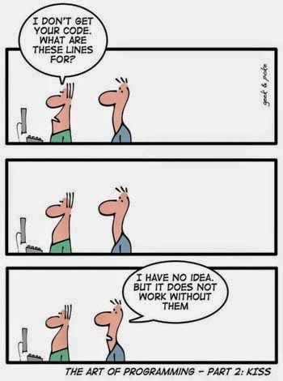

Ah, push it.
January 3, 2016
Happy 2016 all! I have to start my first ever blog with a corny programmer joke. To kick off the new year, I resolve to never do this:

In all seriousness, I could not be more excited to begin this year with such a drastic change: attending Dev Bootcamp. Having never opened my computer's terminal before, I am proud to enter 2016 having mastered a few basic commands and knowing where to look to learn new ones. While this first blog post will not be anything earth-shattering or remotely helpful to coders who have any level of coding experience, I know it will be great to look back on as I progress through the program. The following will summarize what I've learned during my first week of remote prep. Excited to chronicle this journey and to look back on these posts once all of this is second nature!
Growing up, I never thought coding would be for me. I envisioned coders to be brainy hacker-types who sat alone in a dark room, typing nonsensical commands in different colored strings onto their computers, never coming up for air. Understanding that coding is much more of a collaborative process was crucial in my decision to pursue it. Being exposed to GitHub this week took this understanding a new level, as I now see a means to getting my code out to the world and into the hands of others. GitHub is like Facebook for the world of programming. Instead of posting photos or updates on your life for others to comment and view, you post versions of your projects for the same purpose of sharing it with your network. It is a social network that is essential if you want to interact with others in this field and actually produce the best work possible. I am excited to now have access to so many talented programmers' knowledge, and to elicit improvements and suggestions from them throughout my career.
As someone who is very detail oriented, I often fear making mistakes and will spend hours checking to see that something is perfect. I have been relieved to learn that writing code is a process, and is innately imperfect - making mistakes helps you learn and may even lead to discovering something new. Version control helps with this - I now know I can save a version of my work at any time, and revert back to that working version if I ever introduce a bug into my code. This gives me immense peace of mind moving forward! Using git will allow me to create different branches of my work, so to never affect the master, and will allow me to enter comments, called the commit message, each time I make changes and push a commit, or a snapshot of my code in time. This will provide me with a succinct history of the changes I've made over time, why I made them, and how I made them. On GitHub, there will be an even more robust history of the changes made, since others will introduce their changes.
As I wrap up week one, I'm feeling accomplished. I view my completion and understanding of the challenges as tiny successes, and will use this feeling to propel myself forward through the material. It has felt amazing to learn so many new skills so quickly. I'm feeling anxious for my first pairing session coming up next week, as I will have an opportunity to flex these new skills in front of a stranger for the first time! Wish me luck!